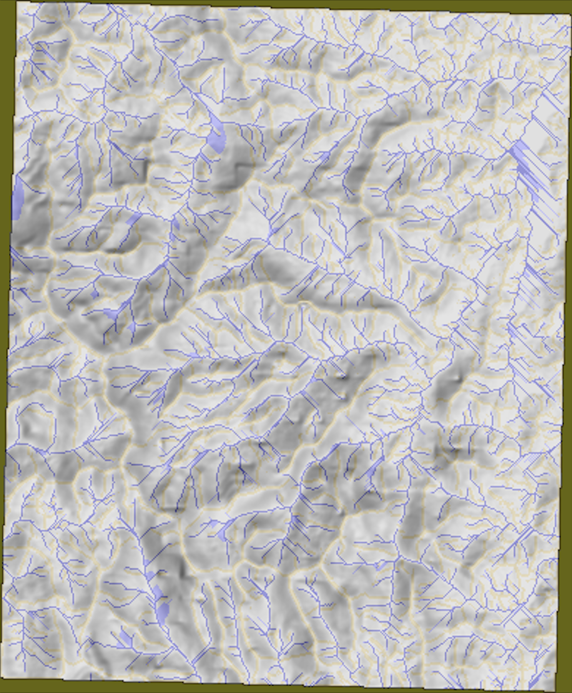

GIS-Mapping Projects
In my advanced GIS Algorithms course, I undertook a challenging project focused on efficiently computing and visualizing Viewshed, Flow, Sea-level Rise, and other applications of Geographic Information Systems data.
Viewshed
My program efficiently computes and visualizes points visible from a designated input point on an .asc grid. Initially, I implemented an exact algorithm, albeit with a cubic time complexity. However, I am actively exploring and planning to implement variations such as the radial sweep and horizon algorithms to significantly improve runtime efficiency. Using the exact implementation as a benchmark for accuracy statistics, I aim to enhance computational speed and precision. As showcased in the visualization of viewsheds from a point atop Mt. Rainier, the dataset utilized contained 12GB of data with over 65 billion points. Despite the enormity of the dataset, my algorithm ran within approximately 2 hours. Future iterations of this project will focus on implementing more efficient algorithms to drastically reduce processing time. This project represents my interest in the optomization of GIS algorithms, not only to improvoing runtime but also to enhance scalability for handling larger datasets and enabling more complex analyses.

Flow
My program processes and visualizes flow accumulation. This visualization technique is paramount in identifying watersheds, understanding the flow of water through specific channels, and discerning areas prone to flooding or soil erosion.
Elevation Gradient and Hillshade Overlay
Visualize terrain through the merging of elevation gradient and hillshade, offering a comprehensive view of the mountainous regions.
Flow Accumulation Visualization
Witness the flow accumulation in vivid detail, where yellow denotes 0 accumulation (the wateshed boundaries) and shades of gray, blue, and dark blue represent increasing flow accumulation.

Flow Accumulation Overlay with Hillshade
The fusion of flow accumulation data and hillshade provides a nuanced perspective on water flow patterns.
For more details and the program's code, visit the Flow GitHub Repository.
Sea Level Rise
My program utilizes a boundary sea points queue to incrementally flood the land. Below are maps illustrating North Truro and Provincetown, MA, showcasing flooding results progressively incremented from 0 to 20 feet. The visualization, integrated with hillshading and utilizing an array of colors, ensures accuracy comparable to government agencies' tools.


Explore the code and more details on the Sea Level Rise GitHub Repository.